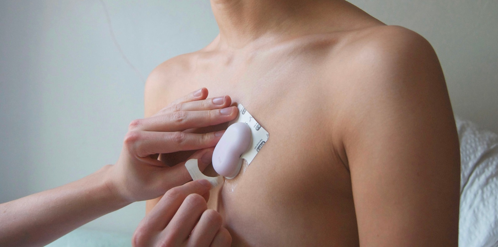
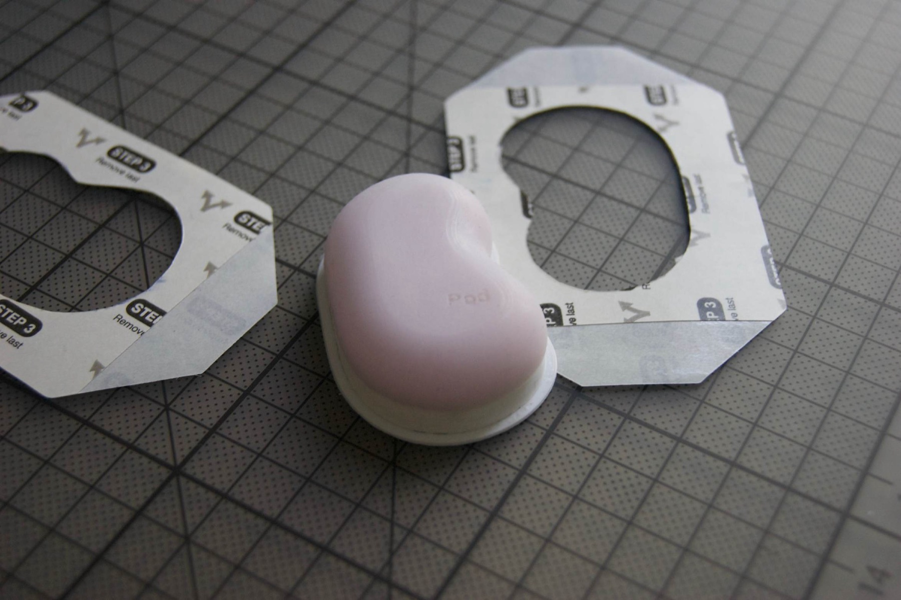
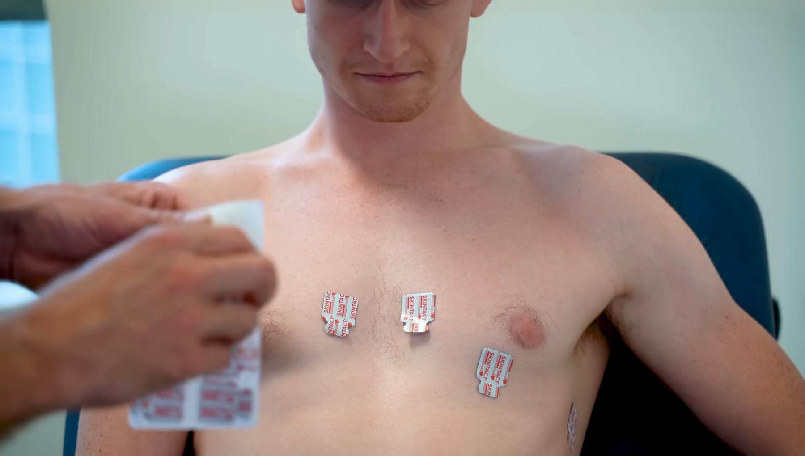
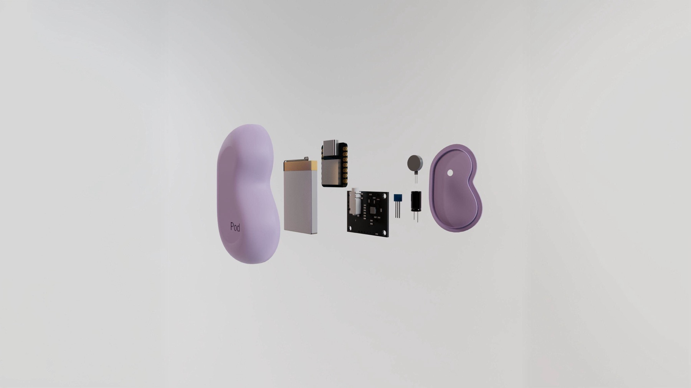
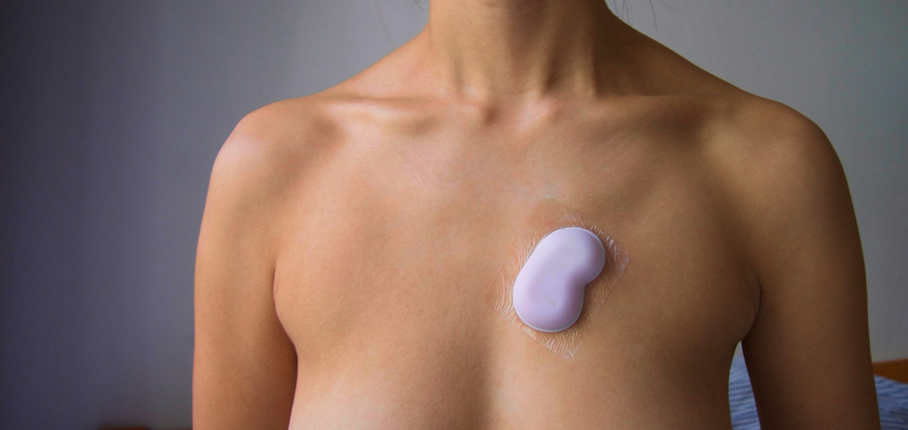

Monitoring the symptoms of Chronic Fatigue Syndrome with a wearable electrode "tattoo" — medical-grade readings, without the discomfort.

Pod is a medical device using EKG technology to help people with Chronic Fatigue Syndrome track their condition. Using novel electrode "tattoos," it generates continuous, medical-grade readings with minimal discomfort — helping users better manage their lives.
People with Chronic Fatigue Syndrome (CFS) are underserved: there are 24 million cases worldwide, zero medically approved monitoring techniques, and 89% of patients are unsatisfied with current methods of symptom management.
New research has linked heart rate and heart rate variability to Chronic Fatigue — meaning these biomarkers can, for the first time, be used to track it. But medical-grade ECGs aren't easily wearable, given the leads required. That raised the question: could tattoo-like leads, enabled by new material advances, provide comfortable, long-lasting, medical-grade recording?
Early ideation explored the device's form directly on paper — electrode points, battery placement, and how it might feel to wear — before moving into 3D concept exploration.

Studying standard ECG placement showed that electrodes are positioned relative to a single point on the chest — reflected in Pod's design through a central notch, which eliminates the need for eleven other alignments.

Users take their own measurements to get fitted electrode "tattoos," then align and adhere the electrodes to their body, slot the adhesive over the pod, and adhere the pod to the electrode point. A haptic sensor alerts the user when they're over-exerting themselves.
Medically safe housing shaped to sit comfortably against the body.
NMC Li-ion battery and microcontroller driving continuous readings.
Alerts the user in real time when they're over-exerting themselves.

Pod has the potential to help the 24 million people worldwide managing CFS, and countless millions more living with long COVID. Investigations are underway into further medical use cases for electrode "tattoos," including for people with sleep apnoea.
